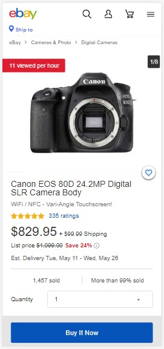

Design Principles Document
Ismael Marin
Visual Hierarchy
ebay
The visual hierarchy in ebay is reached by making the more important button unequivocally more visible than any other element. The blue "Buy Now" button is wide and goes from the left to the right of the screen. It is also close to the user's hand or fingers, so we could also say it follows the Fitt's law too. Navigate to the page clicking here.
Hick's Law
webflow
Hick's Law says that with every additional choice increases the time required to take a decision. In the following site, webflow invites to pick one of three options only. It is easier to make a decision. Take a look at the page from here.
White Space and Clean Design
tesla
There is no doubt that Tesla likes minimalistical expresion. In their website they make this clear: much white space to focus on the product. A minimum of text for descriptions. Visit their page using this link: here.